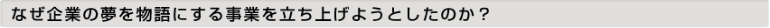
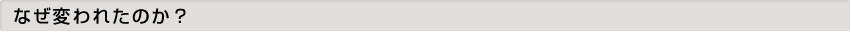

18年間やっていたサッカーを大学卒業を区切りにやめてから夢や目標を見失い人生の道に迷い職業をホワイト、ブルー、グレー、ブラックと色々と経験しました。
お酒に潰れて渋谷のスクランブル交差点で救急車に運ばれたこともあり当時は自分だけ遠回りしていると他人と比べたりしていました。
でも今はあの道が一番の近道だったと強く思っています、最低の経歴だと思っていたことが今は最高の経験歴だと思っています。自分だけ良ければいいと思っていたことが今は社会のために何ができるかを考え行動しています。

それは自分の夢や目標ができたからです。
ネットで沢山の人達や情報や物と出会うよりも一番大切なのは自分の夢や目標と出会うことだと思います。
人生経験から夢や目標を見失しなうと現実ばかり見てしまい毎日を生き延びるために生きている経験を自分自身したし日本の国全体が現在そうゆう状態になっていると強く感じました。
親から「現実を見なさい」「社会はそんなに甘くない」「厳しい時代だから、仕事は辛くてつまらないのが当たり前だ」という日本の風潮をぶっ壊したい。
辛くて厳しい時代だからこそ仕事は甘くないからこそ大きな夢や目標を描いてほしい。
夢を達成できるかできないかではなく、やりたいかやりたくないか、ワクワクするかワクワクしないかで決めてほしい。
でも個人が高い目標や夢を見つけるのは難しい。
だったら大きな夢を企業が掲げ個人の夢や目標を引き上げる、厳しい時代だからこそ大きな夢を掲げる企業がたくさん出てきてほしい。
夢ではなく現実を見せるのは経理や税理士や経営コンサルティングの仕事で夢をイメージさせるのがaaaaaaaaaaaaaの仕事です。
会社の過去をカッコよくしてしまうと自慢話になり人は共感しない、しかしオリンピックの日本代表選手のように夢や目標を語ると人は応援したくなります。
今後の日本を支える若い世代のためにも企業が大きな夢を語り続けることが一番の社会貢献であると思います。
aaaaaaaaaaaaaは企業の大きな夢を物語で社会に伝え日本を明るく元気な国にしたいと強く思っています。
企業とは世の中をよくするためにあり、事業とは世の中の課題を解決するためにある。
aaaaaaaaaaaaa 代表 aaaaaaaaaaaaa（陣内左近のモデルとなった人物）